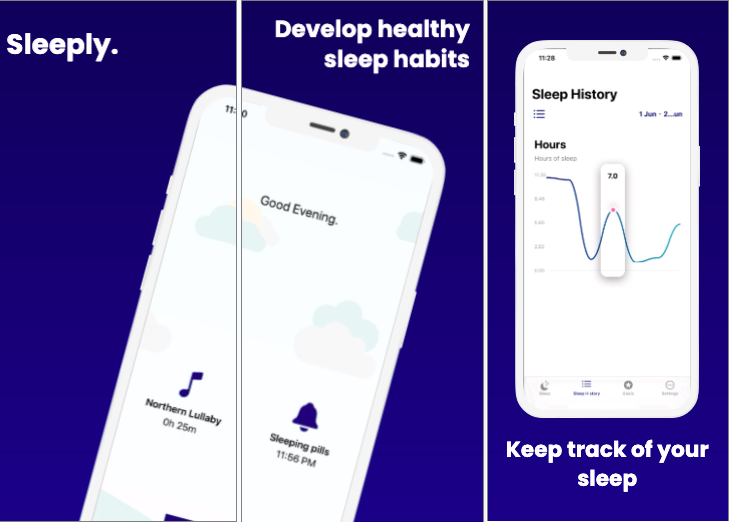

projects
sleeply
Sleep tracking app for iOS
As part of a uni assignment, I developed a sleep tracking app for iOS devices. The app was developed up to its MVP, with features such as tracking and viewing sleep history, playing sleep-assistive audio, setting sleep-related goals, and managing your evening routine. Some technologies and frameworks used include:
- Persistent data & Cloud storage (Firebase)
- Reminders & Notifications
- Media player & Other AV tools
medication tracking app
UX portfolio project
Working with a group of fellow IT students, we progressed through the various stages of a UX project, from ideation and conception to prototyping and user testing. The project involved a high level of collaboration and creativity - my portfolio outlining the project can be viewed below: